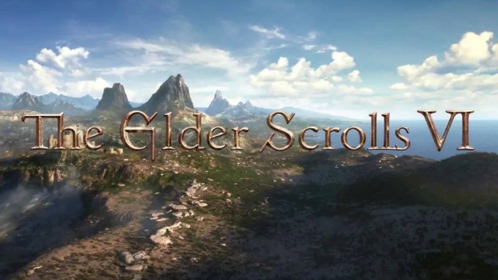
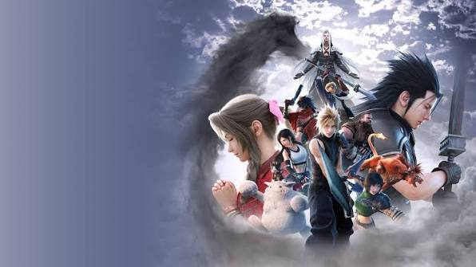

Los videojuegos más esperados de 2027
El año 2027 promete traer grandes novedades para la industria de los videojuegos. Algunas de las sagas más conocidas preparan nuevas entregas y remakes que han despertado el interés de millones de jugadores.
Entre los títulos más esperados encontramos nuevas aventuras de fantasía, juegos de rol y experiencias de terror. En GameZone repasamos cuatro lanzamientos y proyectos que merece la pena seguir de cerca.

The Elder Scrolls VI: Sentinel

Bethesda continúa trabajando en la próxima entrega de The Elder Scrolls, la conocida saga de rol y fantasía a la que pertenece Skyrim.
El proyecto ha generado mucha expectación entre los aficionados, que llevan años esperando una nueva aventura. La información publicada sobre el juego apunta a una ambientación relacionada con Hammerfell.
Sin embargo, todavía no existe una fecha oficial de lanzamiento. Por tanto, no podemos asegurar que llegue durante 2027.
Final Fantasy VII Revelation

Final Fantasy VII Revelation será la tercera y última entrega de la trilogía que comenzó con Final Fantasy VII Remake y continuó con Final Fantasy VII Rebirth.
La historia continuará siguiendo a Cloud y sus compañeros en una aventura que promete cerrar esta etapa de la saga. También ofrecerá un mundo amplio para explorar y nuevas posibilidades de desplazamiento mediante la aeronave Highwind.
Su lanzamiento está previsto para el 8 de abril de 2027 en PlayStation 5. También está anunciado para Nintendo Switch 2, Xbox Series X|S y PC.
Kingdom Hearts IV
La saga Kingdom Hearts regresará con una nueva aventura protagonizada por Sora. En esta entrega visitaremos Quadratum, una ciudad misteriosa en la que tendrá que enfrentarse a nuevas amenazas.
El juego también contará con personajes conocidos como Donald y Goofy, además de nuevos mundos inspirados en películas de Disney y Pixar.
Square Enix ha confirmado que Kingdom Hearts IV llegará a finales de 2027. Estará disponible para PlayStation 5, Xbox Series X|S, Nintendo Switch 2 y PC.
Resident Evil Veronica
Capcom recuperará uno de los títulos clásicos de la saga Resident Evil con una nueva versión de Resident Evil Code: Veronica, publicado originalmente en el año 2000.
Este remake conservará la esencia del juego original, pero contará con una historia renovada y gráficos de mayor calidad gracias al motor RE ENGINE.
Capcom ha anunciado que su lanzamiento está previsto para 2027, aunque todavía no ha confirmado el día exacto.
Comparación de los próximos lanzamientos
| Videojuego | Desarrolladora | Lanzamiento |
|---|---|---|
| The Elder Scrolls VI | Bethesda | Sin confirmar |
| Final Fantasy VII Revelation | Square Enix | 8 de abril de 2027 |
| Kingdom Hearts IV | Square Enix | Finales de 2027 |
| Resident Evil Veronica | Capcom | 2027 |
¿Qué podemos esperar de 2027?
El próximo año puede ser muy importante para los aficionados a los videojuegos. El regreso de grandes sagas, las nuevas aventuras y los remakes de títulos clásicos hacen que 2027 sea un año que merece la pena seguir de cerca.
Aunque algunos juegos todavía no tienen una fecha definitiva, seguiremos pendientes de los anuncios oficiales y de las novedades que publiquen sus desarrolladoras.
Fuentes oficiales
Información consultada el 18 de noviembre de 2026.